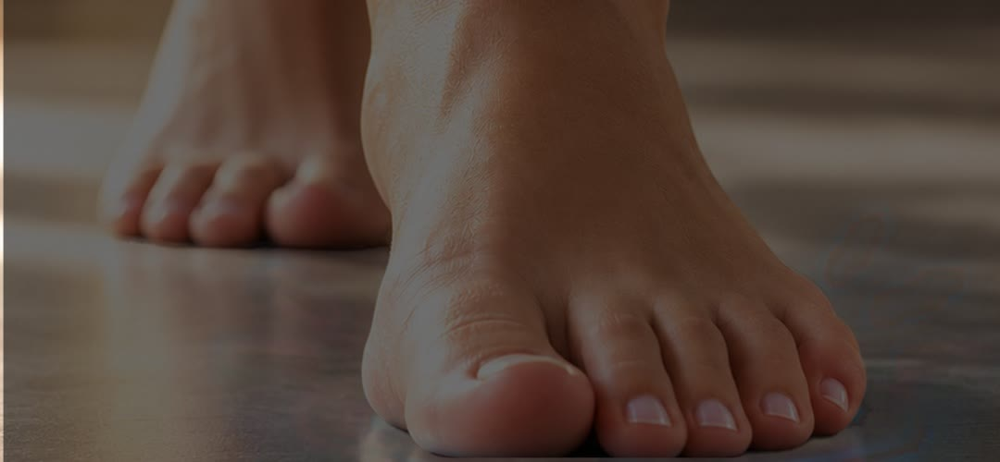
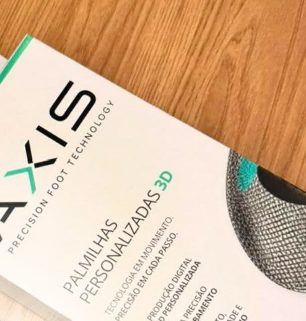
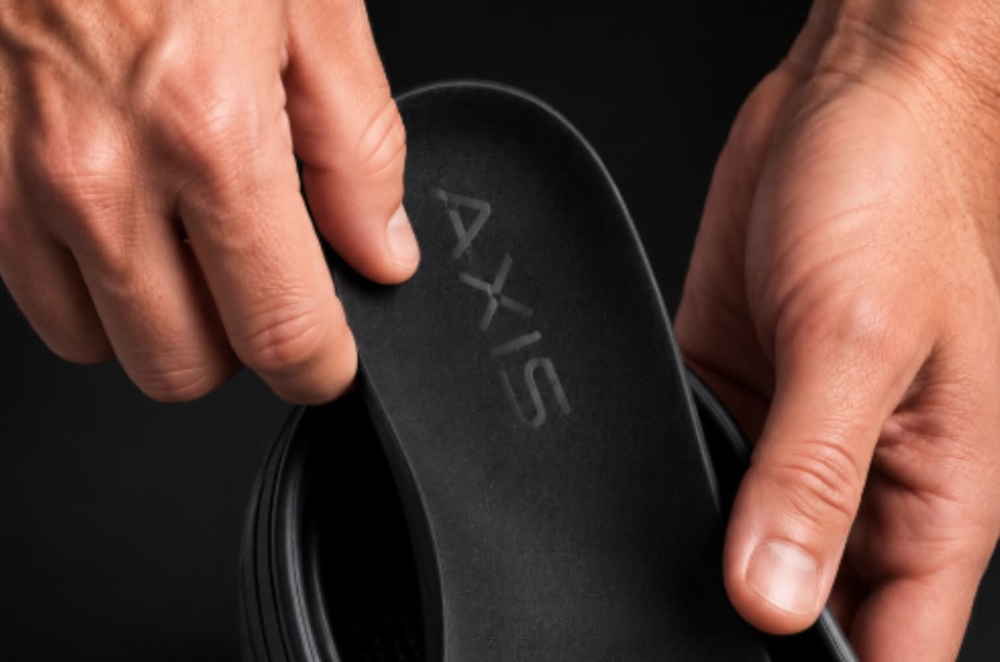
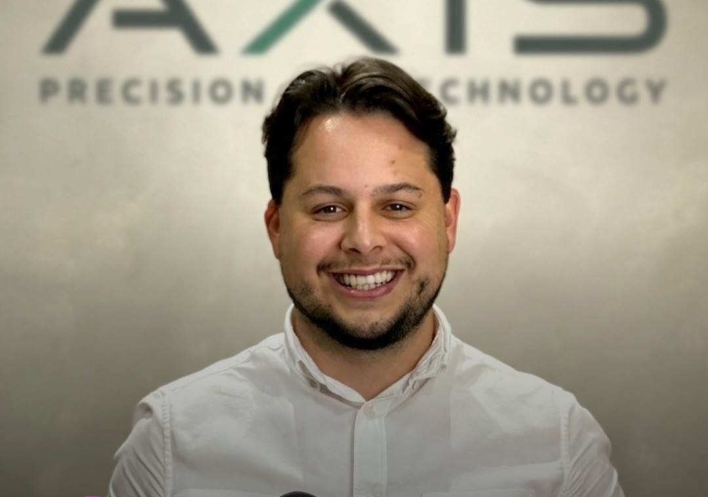

Avaliação
Você faz a avaliação.
Uma consulta com o fisioterapeuta, em Guarapuava. Ele observa como você pisa e como seu corpo se organiza no movimento.
Palmilha feita sob medida, a partir de uma avaliação com fisioterapeuta.
Você pode sentir dor na lombar há anos sem nunca ter sentido dor nos pés. O corpo funciona em conjunto: a forma como os pés recebem e distribuem carga participa de como você se movimenta.
Vale avaliar a pisada quando
Nem toda dor tem origem nos pés. Mas avaliar a pisada pode fazer parte da investigação.
Agendar minha avaliação
Seu pé é o ponto de contato entre o corpo e o chão.
Matheus Kulka · fisioterapeuta
Palmilha de prateleira é um modelo para todo mundo. A AXIS é projetada em 3D e fabricada para uma pessoa só: você.

A palmilha não começa pela palmilha. Começa pela avaliação.
Uma consulta com o fisioterapeuta, em Guarapuava. Ele observa como você pisa e como seu corpo se organiza no movimento.
O que foi observado na avaliação vira um projeto tridimensional, só seu.
A fabricação é em impressão 3D, camada por camada, a partir do seu projeto.
Pronta para o calçado da sua rotina, com a indicação de uso do fisioterapeuta.
Agendar minha avaliação
A AXIS desenvolve palmilhas personalizadas em 3D para diferentes tipos de calçados. A sua acompanha a sua rotina.

Quando alguém chega com uma queixa recorrente, não quero olhar apenas para o lugar onde dói. Quero entender o que está acontecendo durante o movimento.
A avaliação é feita por ele. A partir dela, ele define se a palmilha é indicada para o seu caso.
Não. Alterações no apoio dos pés, assimetrias e as exigências do seu esporte também contam. Quem define é a avaliação.
Não. Mas o corpo funciona em conjunto, e avaliar a pisada pode fazer parte da investigação.
É uma consulta presencial com o fisioterapeuta. Ele observa sua pisada, a distribuição das cargas e o seu movimento.
Sim. O projeto 3D parte dos dados da sua avaliação. Não é um modelo pronto ajustado ao seu número.
A AXIS desenvolve palmilhas para diferentes tipos de calçados, incluindo Crocs. Leve na avaliação o que você mais usa.
O valor da avaliação e da palmilha é informado no agendamento, pelo WhatsApp.
Na R. Quintino Bocaiúva, 2326, Centro, Guarapuava, PR.
AXIS Precision Foot Technology · Guarapuava, PR. A indicação de palmilha personalizada depende de avaliação individual feita por fisioterapeuta. É profissional de saúde? Fale com a AXIS.
Prévia criada pela RK Performance